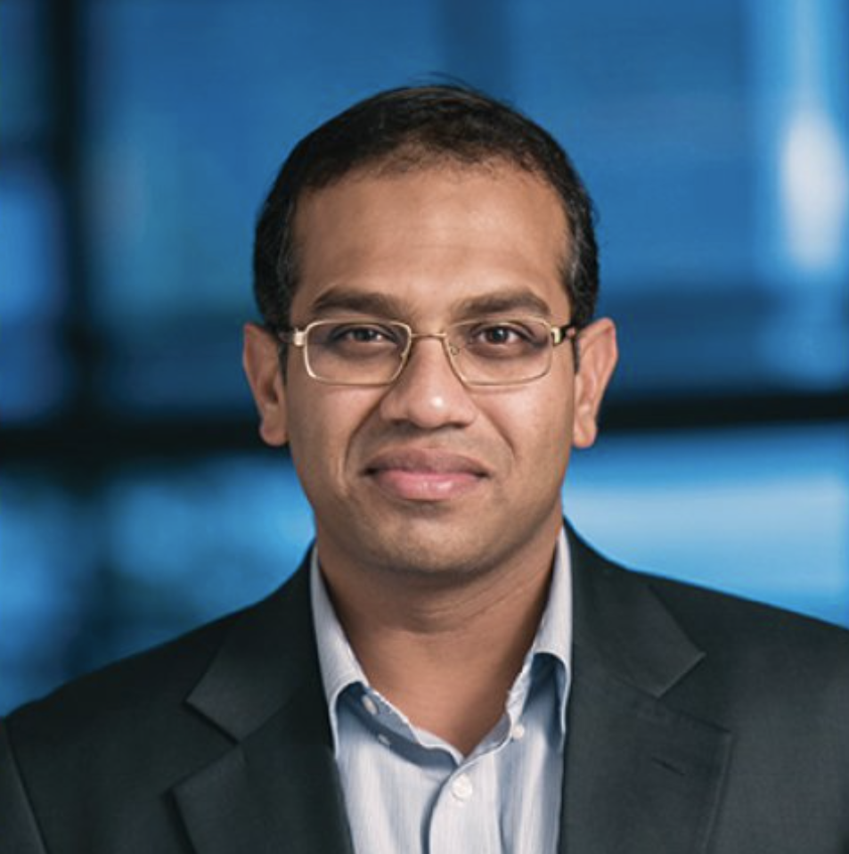
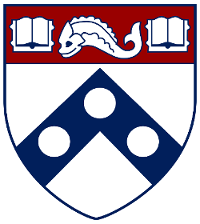

Office: Room 610, Levine Hall
Email: mhnaik@cis.upenn.edu
Office Hours (Summer 2024):
CIS 5550 (online): Sun 11-noon
[
C.V.]



I'm a professor in the department of Computer and Information Science at the University of Pennsylvania.
I specialize in the areas of programming languages and artificial intelligence.
In an earlier life, I was a faculty in Computer Science at Georgia Tech and a researcher at Intel Labs, Berkeley.
I obtained a Ph.D. in Computer Science from Stanford University in 2008, advised by Alex Aiken.
Before that, I received a Masters from Purdue University in 2003, advised by Jens Palsberg, and a bachelors from BITS Pilani in 1999.
And even before that, I spent many idyllic years in the beautiful state of Goa, India.
Research
I am broadly interested in topics related to programming languages and artificial intelligence.
Neurosymbolic Programming
My research is primarily driven by the need to make AI applications safe, interpretable, data-efficient, and easier to develop.
To this end, I am interested in developing principled yet practical approaches to neurosymbolic programming, an emerging paradigm that integrates classical programming with data-driven machine learning.
My research group is investigating these approaches through the development of Scallop, a neurosymbolic programming language and compiler toolchain.
Here are some resources to learn more about Scallop:
Trustworthy AI for Healthcare
AI stands to significantly enhance healthcare by alleviating costs, reducing human errors, and improving patient outcomes.
Important applications abound both in advancing the frontiers of healthcare (e.g., personalized medicine) and in delivering routine healthcare to the masses in emerging economies (e.g., testing and reporting).
The effective application of AI to healthcare is hindered by stringent requirements of safety, explainability, and ability to incorporate expert knowledge.
Neurosymbolic programming offers these features and thereby stands to be an attractive fit for this domain.
My research group is collaborating with bioinformatics researchers and clinicians to apply Scallop to problems in healthcare that stand to benefit from AI.
AI-Enabled Programming Tools
Another topic at the intersection of programming languages and machine learning that I am interested in concerns improving programmer productivity and software quality through AI-enabled programming tools.
This research direction culminated in a Google Tech Talk I gave in the summer of 2022.
It outlines the limitations of purely neural models for code and traditional program analysis systems, which I call System 1 and System 2 respectively, following Daniel Kahneman's terminology in his book Thinking, Fast and Slow.
I also talk about how to overcome those limitations by combining the two approaches.
You can also check out our research on applying deep learning to program verification (Code2Inv, NeurIPS 2018), program repair (Hoppity, ICLR 2020), program analysis (CodeTrek, ICLR 2022), and program merging (DeepMerge, FSE 2022).
Teaching
I regularly teach the following courses:
CIS 5470: Software Analysis
This course covers the principles and practice of software analysis.
A significant -- and fun! -- part of this course is a series of "labs" that involve implementing modern analysis tools in C++ atop the LLVM compiler framework.
All the material for this course is publicly available at https://software-analysis-class.org/.
The course caters to those who wish to become more effective software engineers or are embarking on research in topics related to software engineering or security.
It is open to graduate and upper-level undergraduate students in computer science.
Students from other disciplines who satisfy the prerequisites are also welcome.
I teach this course every Fall.
The course is also offered in two online graduate degree programs:
Penn's MCIT Online usually in the Spring semester, and Georgia Tech's OMSCS in Spring, Summer, and Fall semesters.
CIS 5500: Database Systems
This course covers topics in database systems including data modeling, logical foundations, popular languages, and implementation aspects.
A significant component of the course is a group project that involves teams of 3-4 students building a full-fledged web-based database application using datasets, features, and frameworks of their choice.
The course caters to those who wish to pursue a career in data science or gain a broad yet rigorous understanding of database principles.
It is open to students from all majors and departments across campus who satisfy the prerequisites.
I teach this course every Spring, and it is also offered every Fall (and occasionally in Summer).
The course is also offered in Penn's MCIT Online every semester (Spring, Summer, and Fall).